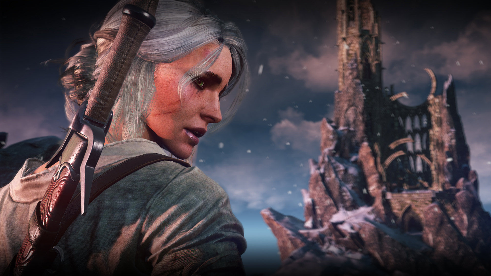
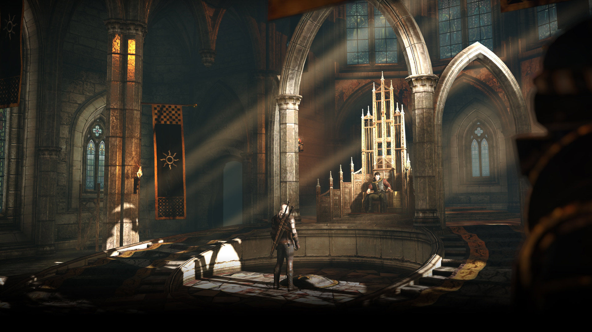
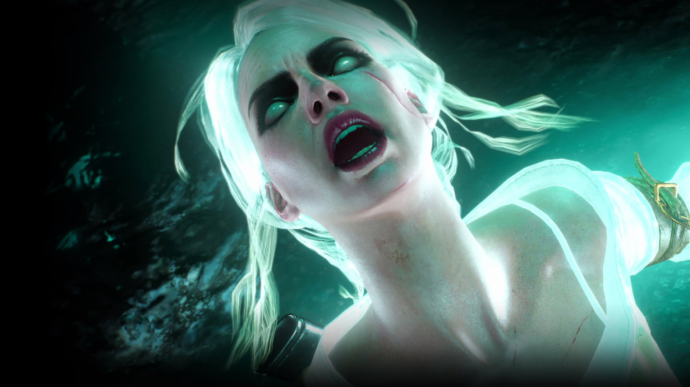
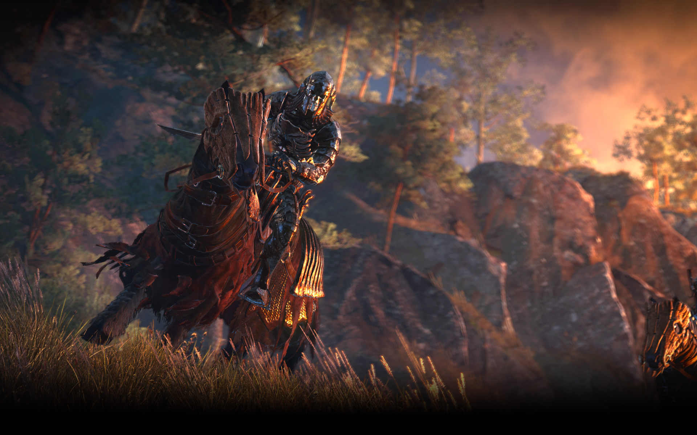
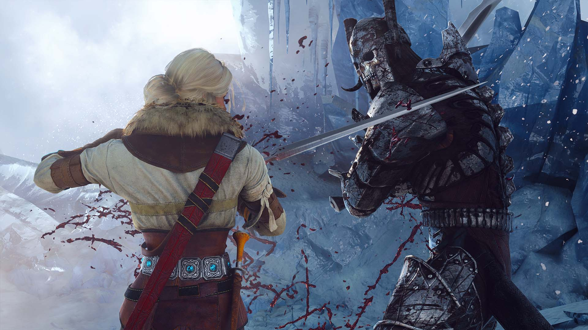
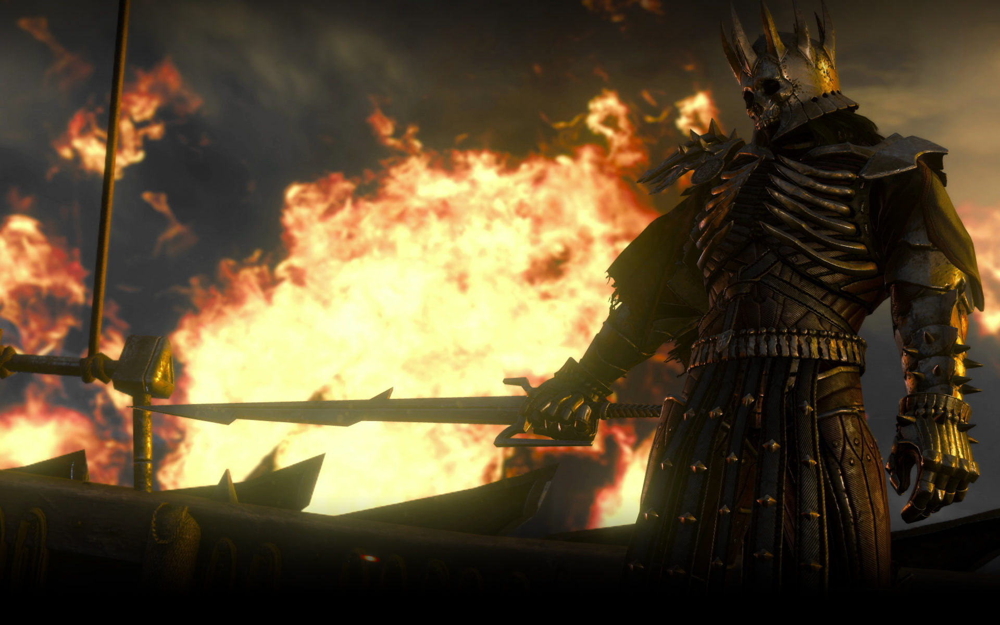
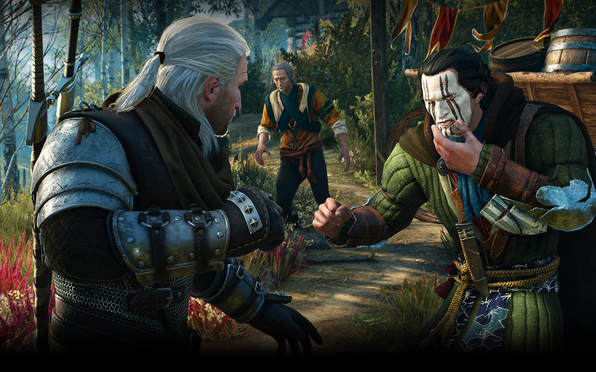

Behold the dark fantasy world of the Continent like never before! This edition of The Witcher 3: Wild Hunt has been enhanced with numerous visual and technical improvements implemented with the power of the latest console generation and modern PCs in mind, including:
Behold the conjunction of two witcher worlds! In The Witcher 3: Wild Hunt next-gen update, discover brand new content inspired by Netflix’s The Witcher series, including two beautifully decorated armor sets for Geralt, and more!
In a war-torn world, with the Wild Hunt on your back, you’ll take on your most important contract -- to track down the child of prophecy, a key and a weapon which can save or destroy all.
As Geralt, embark on your most perilous and personal journey yet as you track down Ciri — your adopted daughter and a living weapon of untold power. This child of prophecy, intertwined with you by the bonds of destiny, is sought after by the most dangerous forces of the Continent thanks to the Elder Blood running through her veins. So it falls to you, the one who mentored, trained, and raised her, to safeguard Ciri’s fate and that of the entire realm.
  The Wild Hunt -- for ages the appearance of this cavalcade of ghostly riders in the night sky has presaged war, plague and death. Few know the riders’ true nature or origin, yet fear grips all at their passing. It is believed they steal souls to add to their ghastly retinue. They come at night, in the cold of winter, and the Aurora Borealis always preceded their appearance.
  In the open world of Wild Hunt, you chart your own path to adventure. You play as a bounty hunter, a man of the road. You set your own goals and choose your own destinations. Go after the bounty on the head of a nasty monster pestering a village or help a scheming prince who needs a dirty job done -- no matter what style of epic questing you crave, The Witcher will provide it.
Witchers are mutants, men subjected to gruelling training and flesh-altering experiments that prepare them for one purpose: to kill monsters. Geralt was forged at the elite School of the Wolf and is considered one of the deadliest witchers ever trained. He possesses superhuman reflexes and strength, and his sword fighting skills are second to none.